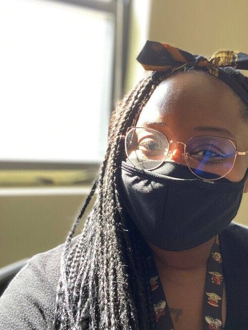

About Me.
Welcome to my portfolio! My name is Sophia and I have just about 15 years experience as an IT professional. My love of technology began in the late 90s with my grandfather's gigantic desktop using dial-up to log into AOL chat rooms. My first official technical experience began when I enlisted in the Navy with the job classification "IT" (it was previously known as "Radioman"). I was the System Administrator of a small communications unit providing flight following and post-flight data analysis. Our primary communications were radio/antennas, over-the-air chat, key-based crypto and magnetized discs, but we also had mobile LAN for internet that we used for email, training, video chat and shopping.
My enlistment coincided with the military right at the cusp of modernizing, so I received a balanced experience utilizing legacy system and burgeoning technologies to support our missions. As a Veteran, my career has provided many opportunities to gradually increase my knowledge in the field based on that foundation. I've provided help desk support, software review and purchasing, and I currently maintain the PBX for a large military hospital and 60 outlying clinics providing routine daily support of our analog/digital/VOIP phone system as well as radio, pagers, and some commercial phone services. I'm proud of what I have learned and accomplished since I first heard that classic AOL "Welcome!" all those years ago. And for as long as I've been in this field, I believe I have only dipped my toe in the pool. I'm excited and encouraged by the broad range of possibilities in this new realm.
A little personal about me. I was born in Germany and lived there until I was 13, my favorite color is a soft pink but I wear black head-to-toe daily. If you were to yank my airpod out, you'd likely hear Fleetwood Mac, Prince, Kate Bush, Christine and the Queens, or the 1975. I'm a lover of cats and a tolerator of dogs. The movies I've watched the most during the pandemic are Speed (1994), Mad Max Fury Road (2015), Stranger Than Fiction(2006), Logan (2017), Arrival (2016) and Step-Brothers (2008).